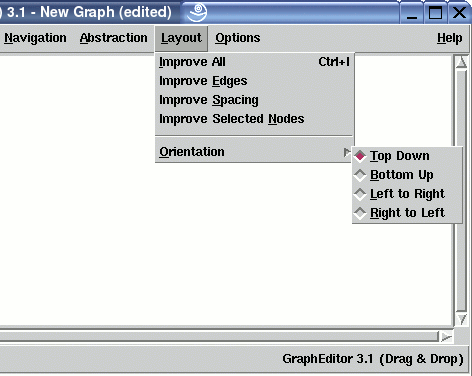

Manual
Layout Menu
The Layout menu contains operations for controlling the layout of a graph visualization which is shown in the graph area of a base window. There are operations to optimize a layout and to select the layout orientation.
Note: menu operations can also be invoked without the mouse by using keyboard commands.
Layout Optimization
-
Improve All
This operation starts an algorithm to optimize the layout of the whole graph. The most important task of the layout algorithm is to reduce the number of crossings between edges. Reducing edge crossings is a technique to clarify a graph layout. The current number of crossings is displayed in the View/Graph Info... dialog. Edge Crossing reduction is done by reordering the nodes at each level using a heuristical approach. Details about the layout algorithm can be found in the concepts document. Because crossing reduction is an expensive operation, the layout algorithm will not be used immediately after loading a graph. So the user has to do this manually with this menu operation. -
Improve Edges
Same as "Improve All" (see above), but the order of the nodes is fixed here, so only the position of the invisible dummy nodes (used to fill long span edges) is calculated. For the user, this function has the effect of better edge routing, without changing the order of the regular nodes. Note: even if the order of regular nodes is fixed here, their absolute position may change. -
Improve Spacing
This layout operation moves all nodes closer together in the graph visualization to take advantage of unused space. The order of nodes is not affected. Usually, one will use this operation after hiding subgraphs with menu operation Abstraction/Hide Subgraph to get a more compact layout. -
Improve Selected Nodes
Same as "Improve All" (see above), but this operation optimizes the position of the nodes that are currently selected in the base window and all of their dummy nodes. The advantage of a local layout optimization is that the resulting visualization may be better for the selected nodes, because the surrounding nodes which are not visible this time must not be taken into account. The disadvantage is that the layout of the other nodes may be getting worse after using this operation. So use this operation when you are not interested in a good overall layout, but want to get the best result for the selected nodes.
Controlling the Layout Orientation
-
Orientation
The operations in this cascade menu are used to set the general orientation of a graph layout. By default, a hierarchical visualization of a graph is drawn in top-down direction so the first level (with the root nodes) is at the upper side of the graph layout and all edges point downwards. Use any of these menus to draw the graph in one of the four orientations. Details about the graph layout can be found in the concept chapter.-
Top Down
To draw the graph with a top-down layout where the first level is at the upper side and all edges point downwards. This is the default direction. -
Bottom Up
To draw the graph with a bottom-up layout where the first level is at the lower side and all edges point upwards. -
Left to Right
To draw the graph with a left-to-right layout where the first level is at the left side and all edges point to the right. -
Right to Left
To draw the graph with a right-to-left layout where the first level is at the right side and all edges point to the left.
-
Top Down
Copyright © 2005, Universität Bremen. All rights reserved.